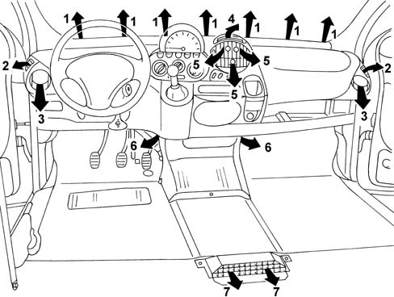

Introduction - CLIMATE CONTROL - MISCELLANEOUS
- Path
- Descriptions > 50 AUXILIARY UNITS > 5010 CLIMATE CONTROL - MISCELLANEOUS > Introduction - CLIMATE CONTROL - MISCELLANEOUS
- Kind
- system description
- Applies to
- all engines; all production periods
- Interactive page
- https://sloeber94.github.io/elrnDB-fMltpl/en/#/2892446
Applies to: all engines; all production periods
Recirculation
This function of the ventilation system makes it possible to recirculate the same air in the passenger compartment, preventing the intake of outside air. It is a very useful function because it makes it possible to exclude the entry into the passenger compartment of undesirable outside air (fumes, polluted air when driving in traffic, etc.).
The climate control system has been designed to maximize the following two basic parameters:
- physical well-being
- demisting capacity
These objectives are achieved through the:
- air flow rate
- air distribution
- air quality
Air flow rate
The flow rate is the amount of air which the system is capable of introducing into the passenger compartment. A high flow rate makes it possible to reduce the response times to the adjustments and achieve a suitable exchange of air. The electric fan used guarantees an optimum flow rate and is extremely quiet.
Air distribution
This is designed to allow the air introduced into the vehicle to reach all areas of the passenger compartment.
The system has numerous groups of vent and operates according to various types of distribution which can be selected using the special control.
Air quality
The system is capable of lessening the unpleasant effect of pollution in certain driving conditions (stuck in traffic, driving through a tunnel, etc.).
This is achieved via the recirculation function and, for vehicles with air conditioning, through a special filter element (pollen filter).

1, Centre vent for defrosting and/or demisting the windscreen 2, Vents for defrosting and/or demisting the front side windows 3, Adjustable side vents 4, Adjustable upper vent 5, Adjustable centre vents 6, Front footwell air vents 7, Rear footwell air vents